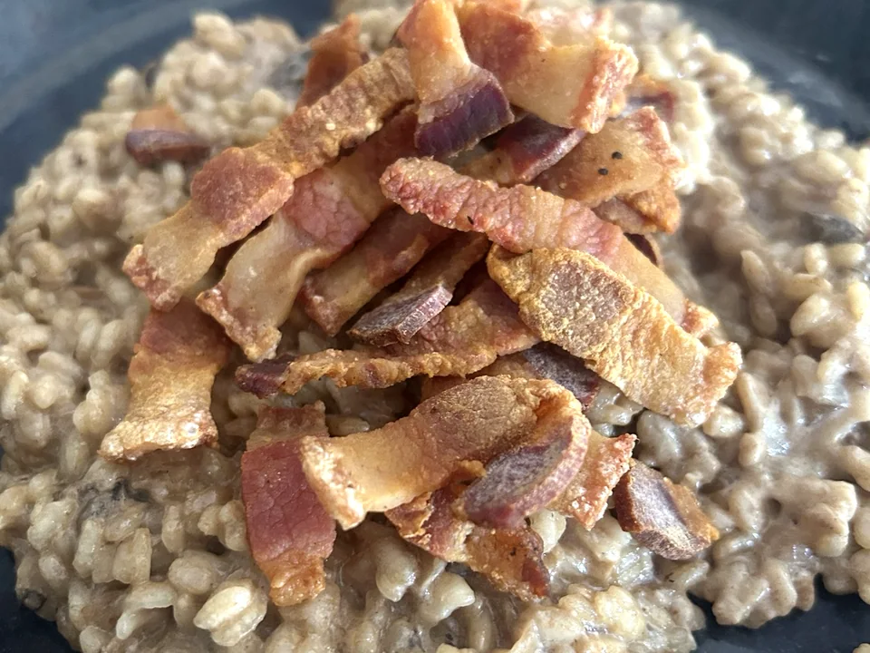

Risotto de ceps con guanciale crujiente
Arroz meloso con ceps y parmesano, coronado con guanciale bien crujiente. El contraste se consigue al añadirlo solo en el momento de servir.
- Tiempo total
- 45 min
- Preparación
- 15 min
- Cocción
- 30 min
- Raciones
- 4 personas
- Dificultad
- Media

Ingredientes
4 personas
Marca lo que ya tienes.
El vino blanco es opcional. Añade sal con prudencia: el guanciale y el parmesano ya aportan sabor.
Preparación
- Dora el guanciale. Pon el guanciale en una sartén fría, sin aceite, y cocínalo a fuego medio hasta que suelte su grasa y quede dorado y crujiente. Retíralo sobre papel de cocina y reserva una cucharada de su grasa.
- Saltea los ceps. Limpia los ceps con un paño ligeramente húmedo, córtalos y saltéalos en la misma sartén durante 4–5 minutos, hasta que pierdan parte del agua y se doren ligeramente.
- Prepara el sofrito. Pocha la cebolla o las chalotas picadas en una cazuela amplia con aceite de oliva y una cucharadita de la grasa del guanciale durante 5–7 minutos. Incorpora los ceps.
- Nacara el arroz. Añade el arroz y remueve durante 1–2 minutos. Incorpora el vino blanco, si lo utilizas, y deja que reduzca.
- Añade el caldo poco a poco. Vierte un par de cazos de caldo caliente, remueve con frecuencia y sigue incorporando caldo conforme se absorba. Cocina aproximadamente 16–19 minutos, hasta que el arroz esté al dente y cremoso.
- Manteca el risotto. Apaga el fuego. Añade la mantequilla fría y el parmesano rallado. Remueve hasta obtener una textura ligada y fluida. Ajusta de sal y pimienta.
- Termina y sirve. Reparte el risotto en los platos y coloca el guanciale crujiente por encima justo antes de servirlo.
UN POCO DE OFICIO
Para que te salgan bien
Consejos
- Mantén el caldo caliente para no cortar la cocción.
- El risotto debe quedar cremoso y algo fluido; puedes añadir un último chorrito de caldo antes de servir.
- Si usas ceps secos, hidrata 25–30 g y aprovecha su líquido colado como parte del caldo.
Recomendaciones
Carnaroli y arborio son arroces adecuados para risotto. Remueve con frecuencia, pero sin romper los granos. Incorpora mantequilla y queso con el fuego apagado.
Cómo servir y presentar
Sirve inmediatamente en platos calientes y reparte el guanciale justo al final para conservar el contraste crujiente.
MÁS SOBRE ESTA RECETA
↑ Volver a la recetaRisotto de ceps y guanciale: cremoso por dentro y crujiente por fuera
Un buen risotto no necesita nata para quedar cremoso. El arroz libera parte de su almidón mientras absorbe el caldo y, al terminar con mantequilla y parmesano, adquiere esa textura melosa que contrasta con el guanciale dorado. Los ceps aportan un sabor profundo y terroso que hace que un plato con pocos ingredientes resulte especial.
Por qué funcionan juntos los ceps y el guanciale
Los ceps tienen un aroma intenso y una textura carnosa que combina bien con el carácter del guanciale. La clave está en dorar la carne por separado, guardar parte de su grasa para el sofrito y colocarla sobre el arroz ya terminado: así no pierde el crujiente durante la cocción.
Qué arroz elegir para un risotto cremoso
El arroz carnaroli aguanta bien el punto de cocción y suele dar un resultado muy cremoso. El arborio también funciona. El caldo debe entrar caliente y poco a poco, sin dejar que el arroz se seque. Al acabar, la mezcla debe moverse con suavidad en el plato y no quedar compacta.
Cómo utilizar ceps secos si no hay frescos
Cuando no hay ceps frescos, puedes usar unos 25–30 g de ceps secos. Hidrátalos en agua templada, escúrrelos y cuela cuidadosamente el líquido para retirar cualquier resto de tierra. Ese líquido aromático puede sustituir parte del caldo, ajustando después la sal.
Opiniones sobre esta receta
Consultando valoraciones…